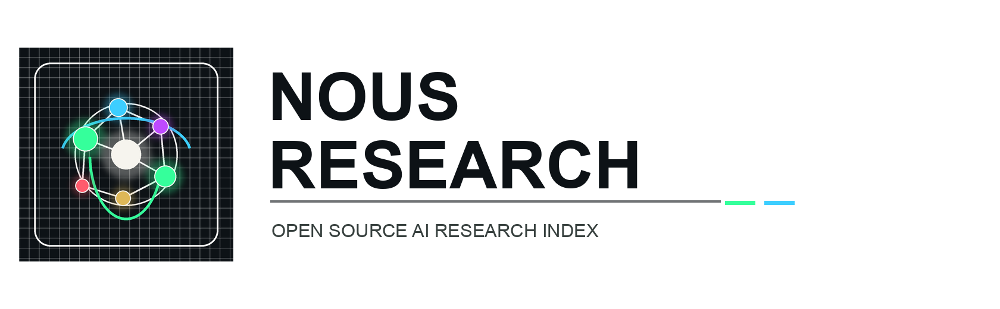
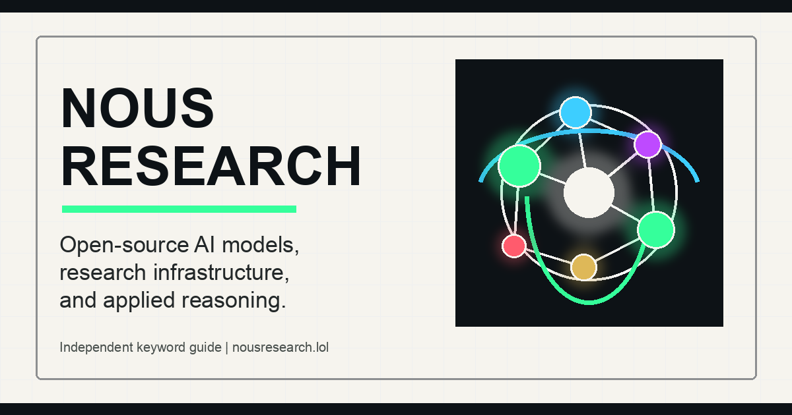

Language Models
Nous Research is associated with public model releases and the Hermes ecosystem, with work aimed at capable, accessible language models.

Independent open-source AI guide
A focused guide to Nous Research: open-source language models, applied AI research, reasoning work, and public infrastructure for distributed model development.
Independent resource. The official Nous Research website is nousresearch.com.

Nous Research keyword overview
Nous Research describes its work around open language models, unrestricted availability, scientific understanding, and infrastructure for distributed training. This page summarizes that public footprint and points to official destinations.
Nous Research is associated with public model releases and the Hermes ecosystem, with work aimed at capable, accessible language models.
The public message centers on open-source availability, human access to AI systems, and broader understanding of model capabilities.
Official materials highlight model architecture, data synthesis, fine-tuning, and reasoning as major research directions.
Official nodes
Why people search Nous Research
The public Nous Research footprint spans model releases, GitHub projects, AI agent work, and research infrastructure. This independent page is built to make those routes clear for readers searching the exact brand keyword.
FAQ
Public official material describes open-source language models, distributed training infrastructure, data synthesis, fine-tuning, reasoning, and applied AI research.
No. This is an independent guide and navigation page. Use the official website for authoritative information, accounts, releases, careers, and contact.
Start with the official website, the API portal, GitHub organization, Hugging Face profile, and Hermes-related destinations linked above.